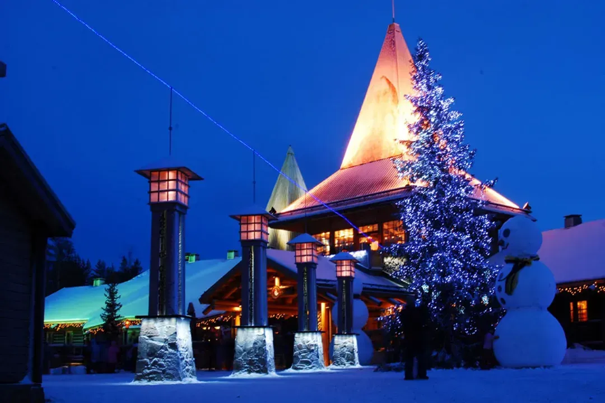
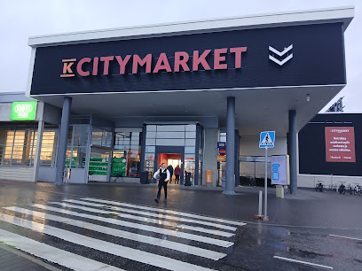

羅瓦涅米 二日遊
10/21 飛抵極圈 ➔ 聖誕老人村快閃 ➔ 市區入住；10/22 極圈文化 ➔ 補給 ➔ 登夜臥鋪火車。
10/21至 10 月 22 日
拉普蘭 秋季氣候10 月夜間低溫、可能初雪，請備防風保暖衣物與防滑鞋。
住宿據點🏨 Arctic City Hotel（兩間房）
點選編號標記
點選地圖上的編號查看景點資訊。
地圖使用 Leaflet 搭配免費地形圖磚。標記位置為概略示意；聖誕老人村內各景點距離很近，請放大查看。
Day 10：10/21 (三) 極圈快閃
🎅 聖誕老人村 ➔ 市區入住
- 12:50🛬 抵達羅瓦涅米機場 (RVN) 搭乘芬蘭航空 AY0542 降落。
- 13:00 – 13:20🚖 出關與計程車移動 迅速提領行李。時間緊湊，請直接於機場外搭排班計程車（車程約 5 分鐘），直奔聖誕老人村。
-
13:30 – 13:45🧳 寄存行李，解放雙手
計程車直接停靠 Santa Claus Holiday Village 前台，辦理行李寄放（每件約 €5），迅速開逛。

-
13:45 – 15:00🎅 黃金重點：晉見聖誕老人（Santa Claus Office）
免費排隊入場，把握打烊前與聖誕老人見面、聊天並拍下極地紀念合照（10 月淡季排隊時間較短）。

-
15:00 – 15:45📮 聖誕老人中央郵局（Main Post Office）
挑選明信片並蓋上專屬北極圈郵戳。想在聖誕節收到請投入紅色郵箱。


- 15:45 – 16:30📸 跨越北極圈線與伴手禮採買 在戶外廣場跨越「Arctic Circle」地標線拍照，或參觀歷史悠久的羅斯福小屋。
- 16:30 – 17:00🦌 馴鹿圍欄親密接觸 走到園區內的馴鹿園（Santa Claus Reindeer），此時雖無雪橇，但可買飼料親手餵食溫馴的馴鹿。
- 17:00 – 17:30🚖 告別園區 ➔ 前往市區飯店 回度假村前台領回大件行李，叫計程車直達市中心的 Arctic City Hotel（3 人分攤一趟約 €22–€30，車程約 10–15 分鐘，免去寒風中等巴士的疲累）。
- 17:30 起🏨 飯店 Check-in 與晚餐 Arctic City Hotel（Pekankatu 9）辦理入住，共預訂兩間房。放下行李稍作休息。
-
晚餐時段🦌 美食推薦：Restaurant Nili 拉普蘭晚餐
市中心知名的拉普蘭料理餐廳（Valtakatu 20），以當地食材料理馴鹿肉等拉普蘭美食，木質與馴鹿角裝飾充滿北國氣氛，建議事先訂位。飯後可步行至最北端麥當勞拍照。

- 夜間自由活動✨ 河畔花園碰運氣看極光 若天氣晴朗、雲量少，可步行約 12 分鐘至 Arktikum 後方的河畔花園看極光。
Day 11：10/22 (四) 極圈文化與夜臥鋪
🏛️ 文化巡禮 ➔ 補給 ➔ 夜臥鋪火車
- 08:30 – 09:30🍳 飯店享用早餐 在 Arctic City Hotel 享用豐富的北歐早點。
-
10:00 – 12:30🏛️ 極地文化深度遊：Arktikum 北極科學博物館
從飯店步行約 10–12 分鐘。館內展示拉普蘭自然生態、薩米人歷史與極光形成的科學原理，並有美麗的玻璃長廊，是了解北極圈科學與文化的最佳去處。

-
12:30 – 14:00🍽️ 美食推薦：Cafe & Bar 21 午餐
位於市中心 Rovakatu 21 的人氣咖啡館兼酒吧，招牌是鹹甜口味的鬆餅，也有沙拉、鮭魚湯與自製甜點。氣氛輕鬆時尚，高峰期較難入座，7 人同行建議先訂位。

-
14:00 – 14:30🍫 美食推薦：Choco Deli 巧克力甜點
市中心購物中心內的手作巧克力與甜點咖啡店。寒冷午後來杯熱可可與巧克力甜點，順便挑選伴手禮。

-
14:30 – 16:30🛒 大賣場最後補給（極重要！）
步行至市區大型超市（如 K-Citymarket 或 S-market），採買隔天早餐的麵包、三明治、零食、水果與飲用水。火車上雖有餐廳車廂，自備補給更溫馨方便。

- 16:30 – 17:00🎒 回飯店提領行李 ➔ 前往火車站 返回 Arctic City Hotel 提領退房時寄放的行李，搭計程車前往羅瓦涅米火車站（Rovaniemi Asema），車程約 3–5 分鐘，車資約 €10–€15。
-
17:15 – 17:35🚉 抵達火車站與準備登車
綠白相間的雙層 VR 夜臥鋪火車通常已在月台等候。


- 17:52🚂 VR 夜臥鋪 PYO266 發車 準時開往赫爾辛基。6 位旅伴一起進入上層（Upstairs）附私人衛浴的車廂，隔天清晨 06:27 抵達赫爾辛基。